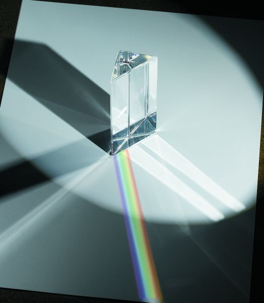
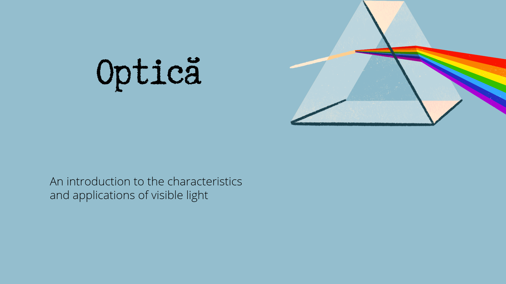
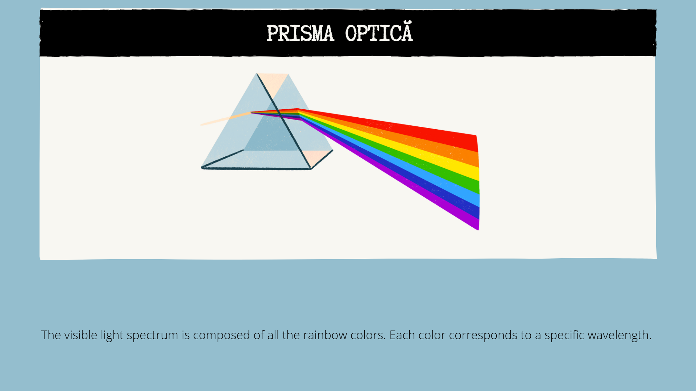
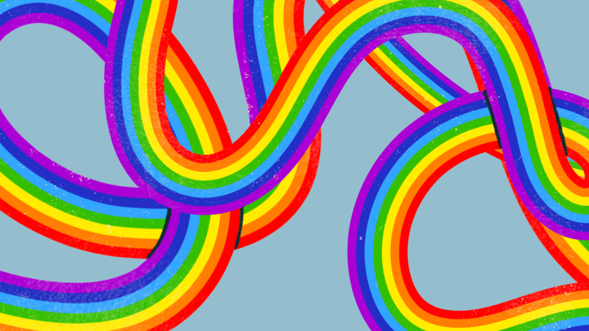

Optica
Câte tipuri de fascicule există?
Fascicul paralel,covergent și divergent, deci trei.
Ce studiază optica geometrică?
Studiază propagarea luminii prin diferite medii și formarea imaginilor prin sisteme optice fară să se intereseze de natura luminii.
Ce este lumina?
Lumina este o undă electromagnetică care se propagă în linie dreaptă și poate avea proprietăți atât de undă, cât și de particulă (dualitate undă-corpuscul).
Care sunt legile reflexiei?
Unghiul de incidență este egal cu unghiul de reflexie. Raza incidentă, raza reflectată și normala la suprafață sunt în același plan.
Ce este refracția luminii?
Refracția este fenomenul de schimbare a direcției de propagare a luminii atunci când trece dintr-un mediu în altul cu indice de refracție diferit.
Cum se calculează indicele de refracție?
Indicele de refracție 𝑛 n se calculează cu formula: 𝑛 = 𝑐 𝑣 n= v c unde 𝑐 c este viteza luminii în vid, iar 𝑣 v este viteza luminii în mediul respectiv.
Ce este dispersia luminii?
Dispersia este fenomenul prin care lumina albă se descompune în culorile spectrului vizibil la trecerea printr-o prismă.
Este unghiul de incidență la care unghiul de refracție devine 90°, ceea ce determină fenomenul de reflexie totală.
Lumina este o undă electromagnetică care se propagă în linie dreaptă și poate avea proprietăți atât de undă, cât și de particulă (dualitate undă-corpuscul).
Prisma optica
În optică, o prismă este un element optic transparent cu laturi netede, lustruite, care refractă lumina. Unghiurile exacte între fețele prismei depind de contextul în care este folosită. De obicei se folosește o prismă triunghiulară, iar în limbaj colocvial termenul prismă se referă numai la acest tip de prismă. Uneori prisma optică nu este construită în forma unei prisme în sens geometric. Prismele folosite astăzi pot fi fabricate din sticlă sau din orice alt polimer transparent, aceasta depinzând de scopul în care urmează să fie utilizată.
{kind=link}



